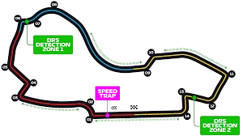

Últimas Notícias
Verstappen conquista vitória no GP da Austrália
Max Verstappen, piloto da Red Bull, começou a temporada com uma vitória dominante no Circuito de Melbourne.
Mercedes apresenta melhorias significativas
A equipa Mercedes mostrou grande evolução no desempenho após introduzir um pacote de atualizações aerodinâmicas.
Calendário 2025 traz novidades
Com a inclusão de novos circuitos, a temporada de 2025 promete emoções renovadas para os fãs de Fórmula 1.
Tempo restante até ao próximo Grande Prémio:
Informações sobre a Pista: Circuito de Melbourne
Nome da Pista: Circuito de Melbourne (Albert Park Circuit)
Comprimento: 5.303 km
Número de Curvas: 16
Número de Voltas: 58
Último Vencedor: Max Verstappen (2024)